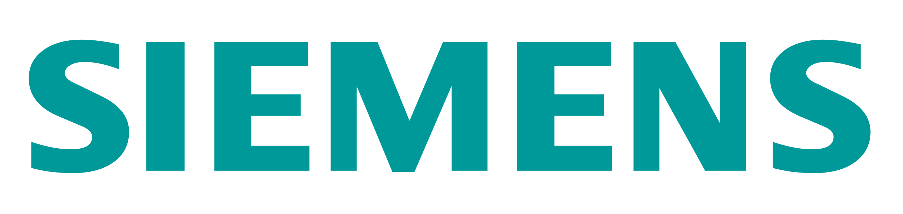

Completed
These deals have gone through all the necessary steps and have been completed.

Brightly Acquired By Siemens
Industrial-manufacturing conglomerate Siemens AG finalized its acquisition of
Brightly Software,
Inc. from Clearlake Capital Group LP for $1.575 billion.
Brightly provides cloud-based enterprise
asset management and facility operations management for companies through a software-as-a-service
model. The company has grown its business considerably since Clearlake took ownership in 2019 and
currently has more than 12,000 customers across education, public infrastructure, manufacturing, and
healthcare. Brightly will join Siemens’ Intelligent Infrastructure division and help to advance
Siemens’ position as a leading provider of software for buildings and infrastructure.
Right Stuf Acquired By Crunchyroll
A year after it was acquired by Sony Corporation’s (NYSE: SONY) FUNimation
Entertainment Ltd, anime
streaming giant Crunchyroll announced that it has acquired anime merchandise retailer
Right Stuf,
Inc for an undisclosed sum. The move represents a large consolidating move by Sony, though
Crunchyroll said it will continue to stock releases from other North American distributors. Right
Stuf is the largest retailer of anime, manga, and related merchandise in North America. Earlier this
year Sony merged FUNimation’s and Crunchyroll’s streaming catalogs into one service; the acquisition
of Right Stuf signals a move to become a one-stop shop for anime fans to buy and stream from. Anime
has exploded in popularity internationally over the past five years, going from a minor subculture
to a major cultural phenomenon with an estimated market of almost $25
billion.
Metromile Acquired By Lemonade
Lemonade (NYSE: LMND), the artificial intelligence-powered insurance company, announced that it has
closed the acquisition of car insurance provider Metromile, Inc. (NASDAQ: MILE). San
Francisco-based
Metromile offers pay-per-mile car insurance and licenses its digital insurance platform to other
insurance companies. The company went public via a special purpose acquisition company in February
2021 at a valuation of $1 billion, but its valuation dropped to
$137 million after the deal closed.
For Lemonade, which launched its own insurance product just a few months ago, the acquisition of
Metromile’s sensor and monitor technologies along with billions of miles of driving data and
hundreds of thousands of claims data will make its Lemonade Car platform “the most competitive,
precise, and fair.”